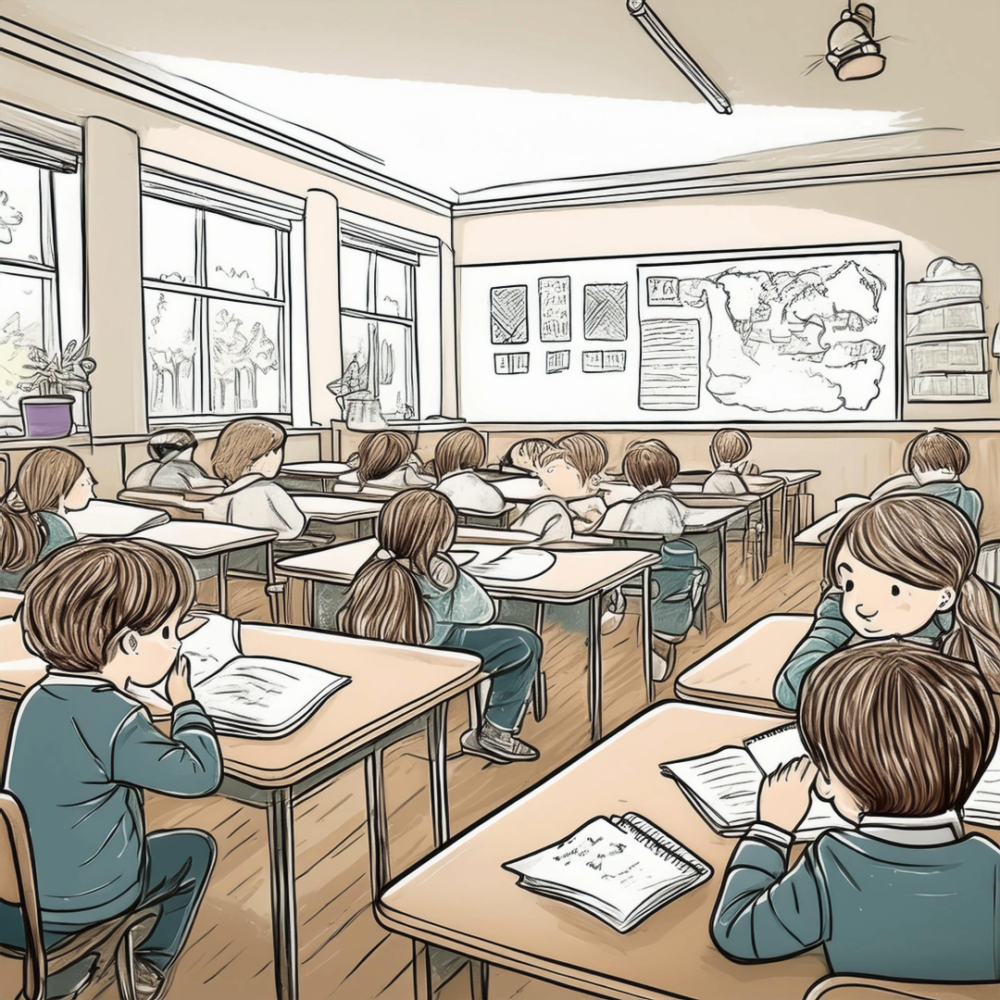
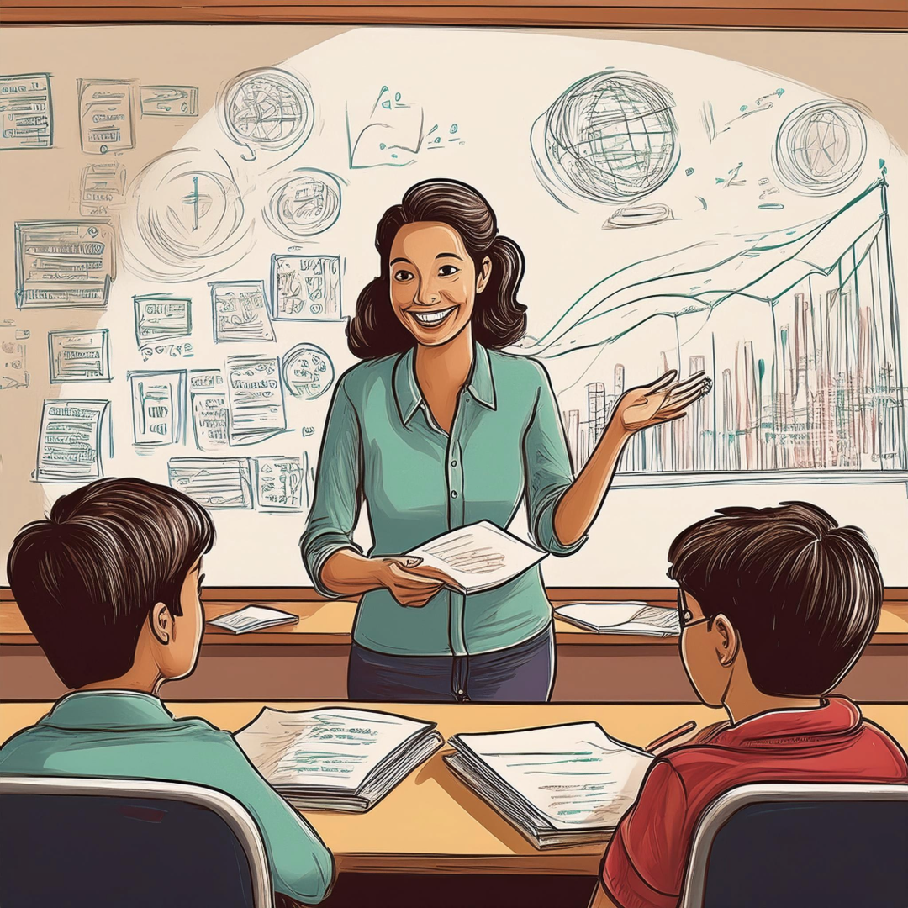
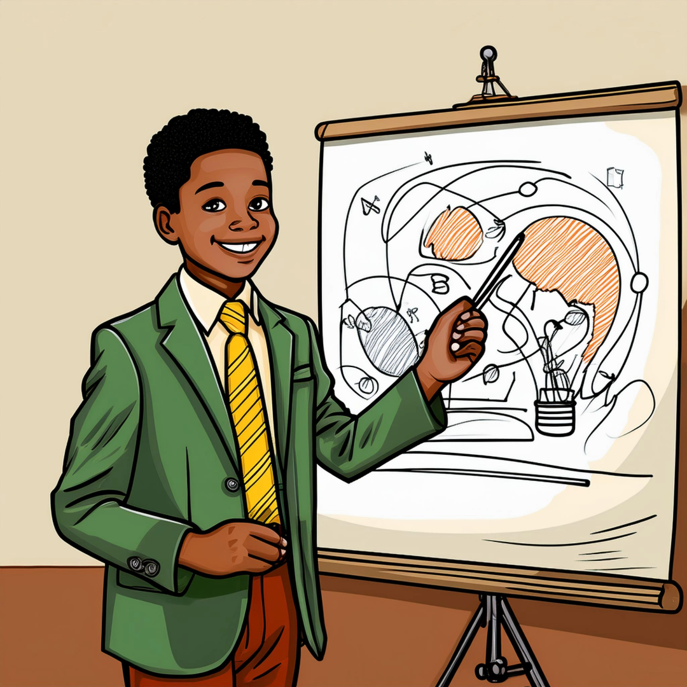

Learning barriers can prevent students from reaching their full potential. By understanding these common challenges, educators can use UDL strategies to help overcome them and create a more inclusive learning environment.
Barrier: Lack of Engagement

Challenge: Students may struggle to stay motivated or connect with the material.
UDL Solution: Provide multiple ways to engage students, such as offering choices in assignments, incorporating hands-on activities, or connecting the material to students' interests.
Barrier: Difficulty Understanding Content

Challenge: Students may have trouble understanding the content due to different learning preferences or abilities.
UDL Solution: Use multiple means of representation, such as videos, infographics, and hands-on demonstrations, to make content more accessible to all learners.
Barrier: Limited Ways to Demonstrate Learning

Challenge: Some students may not perform well on traditional assessments, such as written tests, which limits their ability to demonstrate their knowledge.
UDL Solution: Offer multiple means of action and expression, such as allowing students to create videos, presentations, or artwork to demonstrate what they have learned.